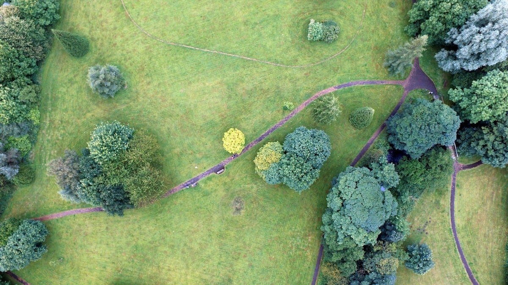
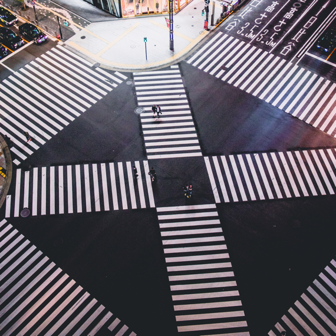

Мы проанализировали спутниковые снимки высокого качества, чтобы найти все зелёные участки в городе.
Мы используем эти данные, чтобы построить самый зелёный маршрут.
За снимки благодарим Greenpeace Россия

Зелёные улицы
Quite street
— Минимум шума
Кому хочется ходить по шумным улицам? нам — нет, поэтому мы научились строить тихие маршруты

— чистый воздух
С помощью наших друзей из компании Aerostate,
которые предоставили данные, мы научились прокладывать маршруты с самым высоким качеством воздуха